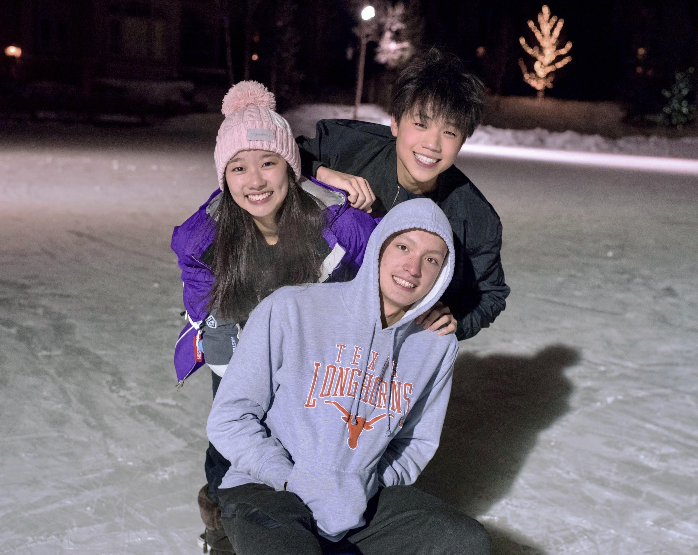
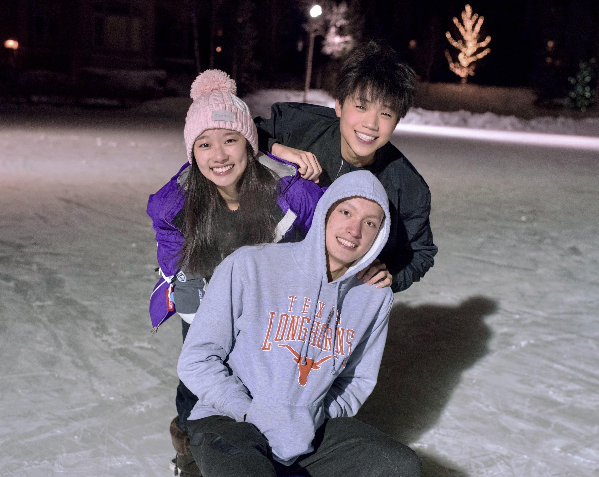

about
myself
I'm currently an undergraduate student at UC Berkeley studying Computer Science and Data Science with a domain emphasis in Economics. My passion for full-stack development has led me down a journey of developmental self-teaching, and I strive for fluidity in both design and implementation. I'm a self-proclaimed lo-fi producer, mogul skier, k-drama aficionado, squid-lover, rythmist, Stokeley fanboy, and Miata enthusiast. From algorithm visualizers to social networking platforms, I build for the sake of building.